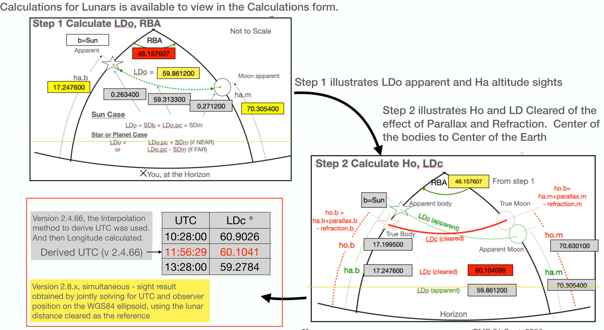

Full-size illustration. Scroll to inspect the details.

Calculations for Lunars is available to view in the Calculations form.
Step 1 illustrates LDo apparent and Ha altitude sights
Step 2 illustrates Ho and LD Cleared of the effect of Parallax and Refraction. Center of the bodies to Center of the Earth
Version 2.4.66, the Interpolation method to derive UTC was used. And then Longitude calculated.
UTC LDc ° 10:28:00 60.9026 11:56:29 60.1041 13:28:00 59.2784 Derived UTC (v 2.4.66)
Version 2.8.x, simultaneous - sight result obtained by jointly solving for UTC and observer position on the WGS84 ellipsoid, using the lunar distance cleared as the reference